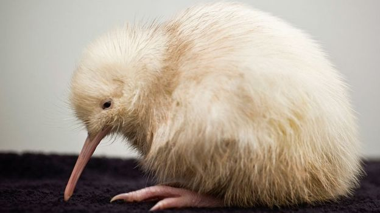

"This strategy focuses on growing the wild kiwi population, rather than steadying or managing decline," added Ms Barry. As well as increasing numbers, the plan will also restore the birds' formerly safe habitats. "It is possible to bring kiwi back from endangered to everywhere," says the report.
Success lies in managing kiwi predators. Dogs are one of the biggest threats, with a single dog capable of setting back years of conservation work in an area. "If kiwi don't have the predators managed, something like 5% of the chicks born every year make it to adulthood a year later," Forest and Bird campaigns and advocacy manger Kevin Hackwell told news outlet Newshub. "That can be almost reversed completely if you control the predators." Stoats are another threat to kiwi, responsible for approximately half of kiwi chick deaths on the mainland.